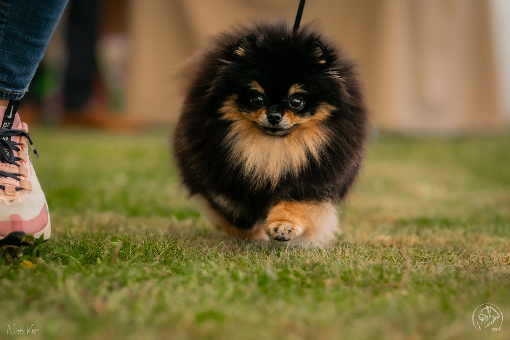
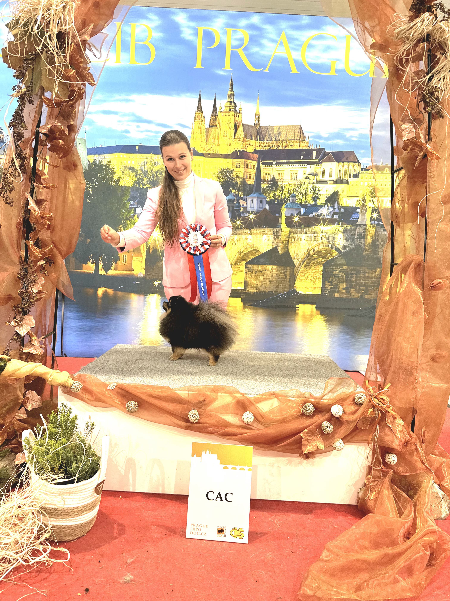
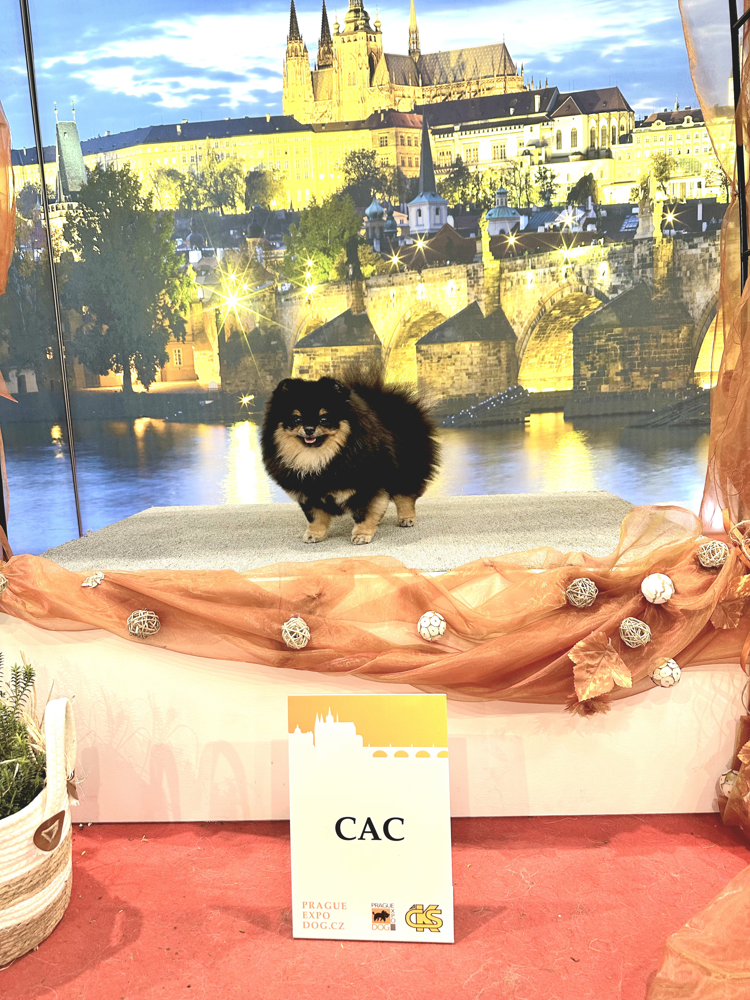
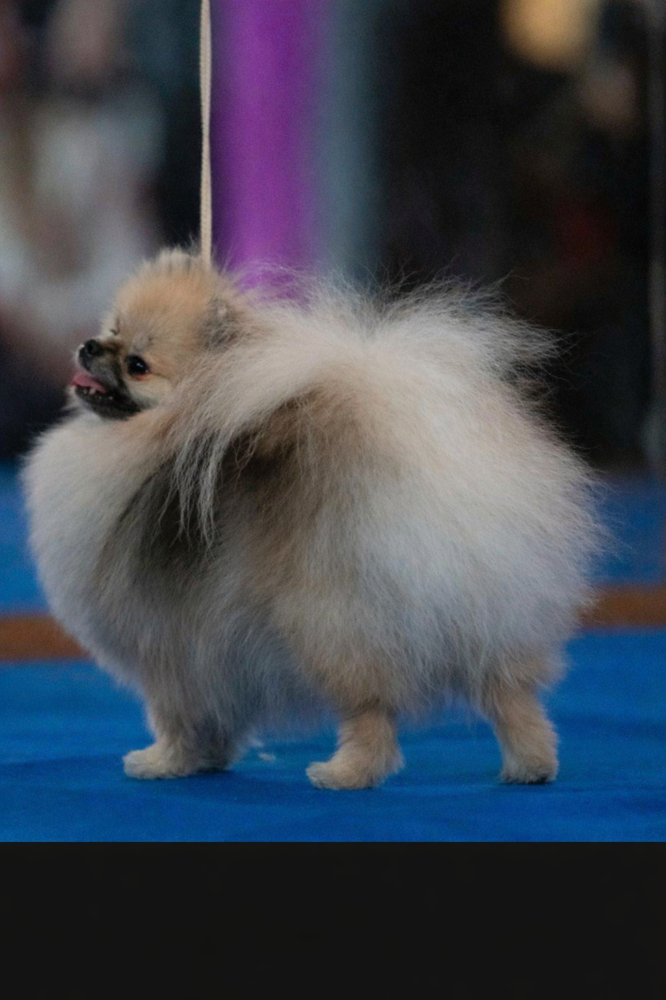
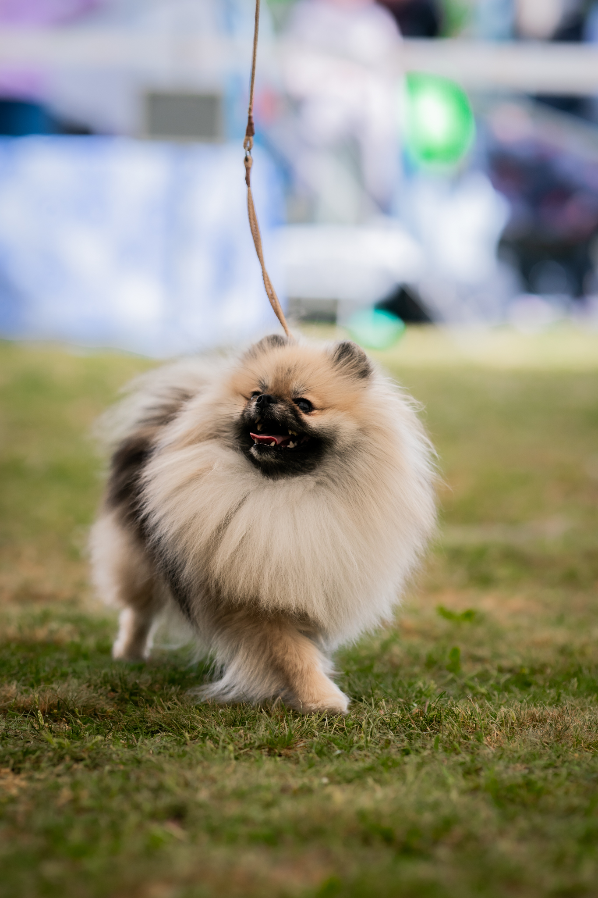
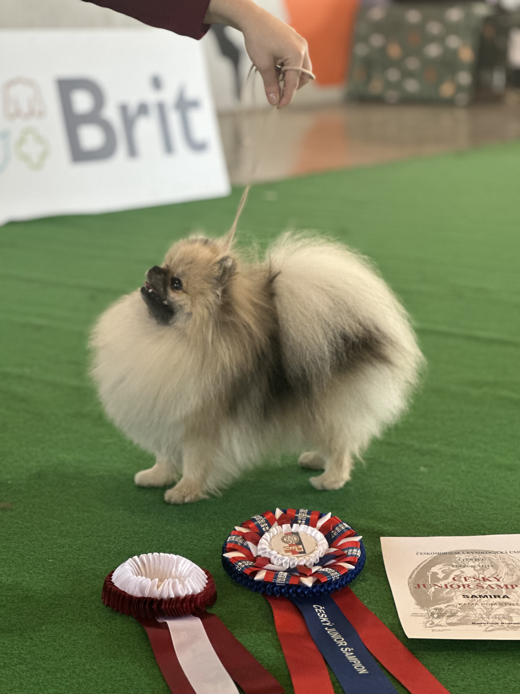
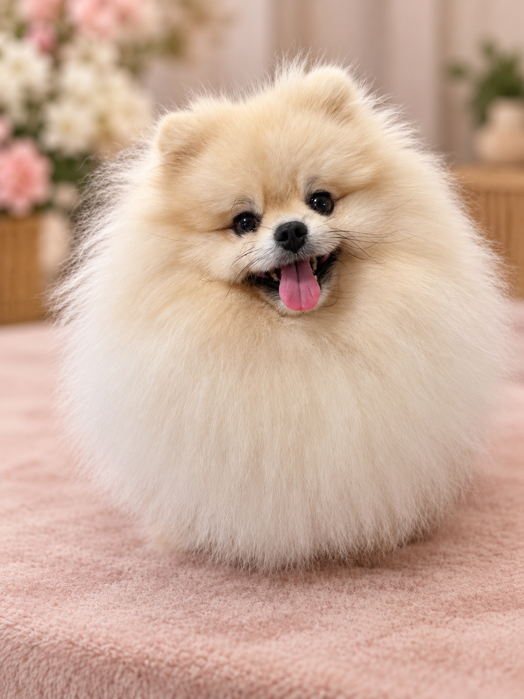
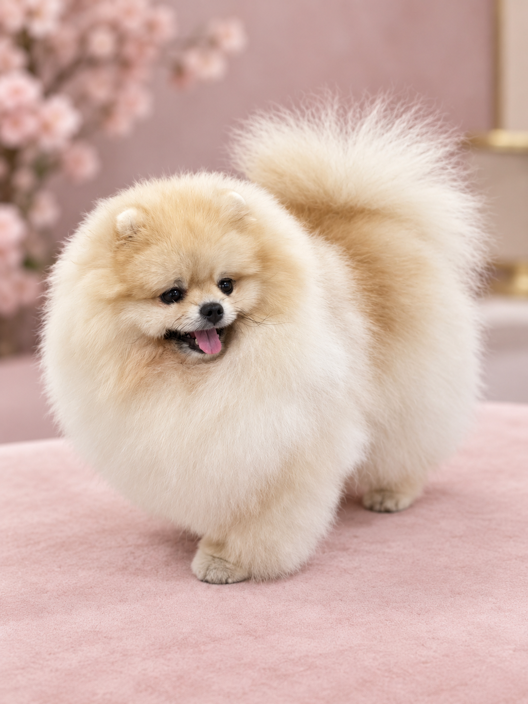
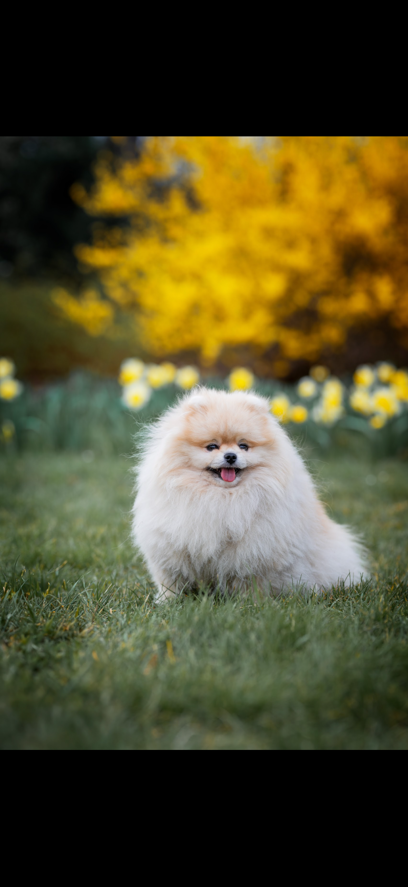

TINY MAJESTY
Naše feny
Zdraví, povaha a krása s respektem k jejich životu.
NAŠE FENY
Každá z nich je nejdříve naše.
Naše feny vybíráme s velkou péčí a respektem k tomu, co od chovu očekáváme. Zdraví, povaha a exteriér jsou pro nás stejně důležité a při výběru se nesoustředíme pouze na to, jak fenka vypadá.
Chceme, aby naše feny byly především zdravými, vyrovnanými a spokojenými psy, kteří mají své místo v naší rodině bez ohledu na to, zda se někdy stanou maminkami.
Každé krytí proto musí dávat smysl. Feny nekryjeme jen proto, aby měly štěňata. Před každým potenciálním spojením znovu hodnotíme jejich aktuální zdravotní stav, kondici i psychickou pohodu a pečlivě zvažujeme, zda je pro ně další vrh skutečně vhodný.
Stejně důležitá je pro nás jejich role budoucích maminek. Už při plánování chovu přemýšlíme nejen nad tím, jaké vlastnosti může konkrétní spojení předat další generaci, ale také nad tím, zda je daná fena vhodná pro roli matky a zda pro ni bude březost, porod a následná péče o štěňata bezpečná a zvládnutelná.
A když přijde chvíle, kdy už fena není vhodná pro další chov, její hodnota pro nás se nijak nemění. Chovatelský důchod neznamená důchod z rodiny.
Zůstává naším psem, naší společnicí a plnohodnotnou součástí Tiny Majesty.




NAŠE FENA
Minnie
Nevler Line Oliffa
Minnie je nedílnou součástí naší rodiny a zároveň jednou z našich chovných fen.
Ačkoliv je svou velikostí drobná, v naší smečce se rozhodně neztratí. Má temperamentní povahu, vlastní hlavu a velmi dobře ví, jak si zjednat pořádek. S přehledem zvládá usměrňovat i mladší členy domácnosti a občas nám připomíná, že skutečná autorita se neměří centimetry.
Minnie má v příběhu Tiny Majesty ještě jedno výjimečné místo. Je naší první fenkou v barvě black and tan, která si nás naprosto získala. Právě ona v nás probudila lásku k této barevné variantě a přivedla nás k touze poznávat ji blíž a dát jí místo i v našem chovatelském programu.
Český junior šampion
Minnie je maminkou našeho současného vrhu B.




NAŠE FENA
Sissi
Kama pom style Samira
Sissi je maminkou našeho vrhu A, který bohužel provázela řada komplikací. Protože zdraví a pohoda našich fen jsou pro nás vždy na prvním místě, rozhodli jsme se, že Sissi již do dalšího chovu nezařadíme.
Svou chovatelskou kapitolu tak má za sebou a nyní si užívá zasloužený chovatelský důchod. Její místo v naší rodině se tím ale nijak nemění. Zůstává především milovanou členkou rodiny, které chceme dopřát spokojený život.
Český junior šampion
Sissi je maminkou našeho vrhu A, ze kterého pochází Adelaide.



NAŠE FENA
Bailey
Call me Bailey
Bailey se k nám dostala z jiné chovatelské stanice již jako dospělá, nesocializovaná fenka, která měla za sebou několik porodů. Vzhledem ke svému zdravotnímu stavu a nemožnosti bezpečně pokračovat v chovu se stala nepotřebnou. Rozhodli jsme se jí dát šanci na nový život, bezpečí a domov.
Bailey pro nás nikdy nebyla fenkou určenou k chovu, ale především milovaným členem rodiny, kterému jsme chtěli dopřát život, jaký si zaslouží. Její příběh je zároveň připomínkou toho, jaký chov je nám cizí – chov, ve kterém se pokračuje bez ohledu na zdraví a pohodu zvířete. Věříme, že každá fena si zaslouží respekt, péči a možnost prožít spokojený život, a to i tehdy, když už nemůže nebo nemá být součástí chovatelského programu.
Bailey čeká operace z důvodu luxace patelly IV. stupně, při které jsou kolenní čéšky trvale mimo svou přirozenou polohu a v současnosti se u ní začínají projevovat také potíže se sluchem.
TINY MAJESTY
Její hodnota nekončí posledním vrhem.
Některé naše feny se stanou maminkami. Některé možná nikdy. A u některých jednou přijde chvíle, kdy jejich chovatelská cesta skončí.
Pro nás ale jejich cesta pokračuje dál.
Protože fena není chovný prostředek. Je to člen rodiny.
„Chovatelský důchod neznamená vyřazení z rodiny.“